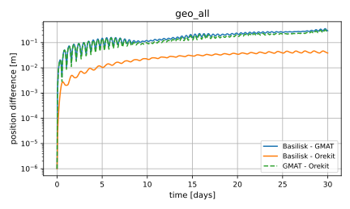
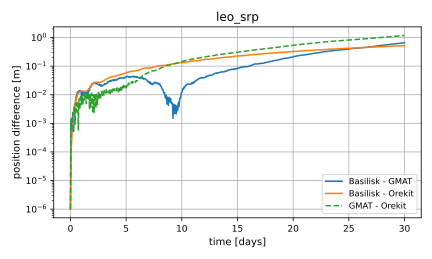
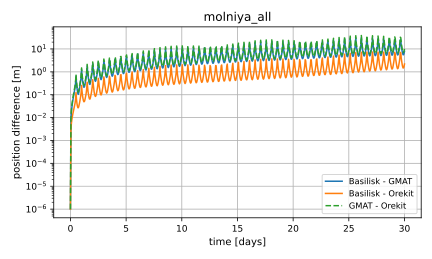
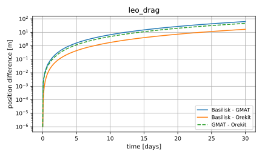
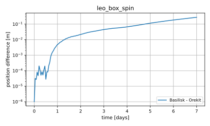

Accuracy Comparison with GMAT and Orekit
This page documents how Basilisk’s orbit propagation compares with two widely used astrodynamics tools, GMAT and Orekit. It is intended to help users who need to show that Basilisk results agree with an established reference before relying on them.
Warning
This is a rough comparison. The three tools differ in their features and in how each force model is set up, so the differences are not a ranking of the tools. The page is not generated automatically: the tables and figures were produced by hand with the tool versions named below, and the page will become out of date as GMAT, Orekit and Basilisk are released. Run times are deliberately not compared, because they depend on the features each tool provides and on step sizes that are not equivalent.
The comparison is reproduced by the scripts in benchmarks/accuracyComparison:
compare_with_basilisk.py,
the reference generators
generate_gmat_reference.py and
generate_orekit_reference.py,
and the case definitions cases.json.
The results on this page were produced with Orekit 13.1 and GMAT R2026a, and with Basilisk configured as described in
the tables below: the environment modules use the spacecraft state extrapolated to the middle of the step
(setExtrapolateScStateToStepMidpoint(), see C++ Module: atmosphereBase), and C++ Module: exponentialAtmosphere uses the
ellipsoidal altitude (setPlanetPolarRadius()). The GMAT and Orekit ephemerides are not part
of the repository: Reproducing the Results explains how to generate them and run the comparison. Each generated
ephemeris is accompanied by a manifest that records its provenance, which the comparison validates before it runs
Basilisk. The comparison is not part of the automated tests because it needs both tools installed and the run of all cases
takes several minutes.
Method
All three tools propagate the same seventeen cases, which are defined once in
benchmarks/accuracyComparison/cases.json. In the first ten cases the perturbations are added one at a time, so a
disagreement can be traced to a single effect. The other seven extend the comparison to higher-degree gravity, other orbit
types and epochs, and attitude-dependent drag and radiation pressure. The drag cases use the exponential atmosphere model of each tool (C++ Module: exponentialAtmosphere, Orekit’s
SimpleExponentialAtmosphere and GMAT’s Exponential), configured with the same single-scale density (see the settings
below). GMAT’s model reads its parameters from a table file, which holds one band.
Case |
Force model |
|---|---|
|
Point-mass gravity, inclined LEO (\(a = 6778\) km, \(i = 51.6^\circ\)) |
|
Zonal harmonics \(J_2\) to \(J_6\), same LEO, Earth pole fixed along inertial \(+Z\) |
|
Same as |
|
EGM96 degree and order 8, rotating Earth |
|
Point-mass gravity plus Sun and Moon third-body perturbations |
|
Point-mass gravity plus cannonball solar radiation pressure with Earth shadow |
|
Point-mass gravity plus exponential-density drag with a co-rotating atmosphere |
|
EGM96 8x8, Sun and Moon, solar radiation pressure, and drag |
|
EGM96 8x8, Sun and Moon, and solar radiation pressure (no drag) |
|
Same as |
|
EGM96 degree and order 70, rotating Earth, same LEO, 7 days |
|
Point-mass gravity plus drag in a 700 km sun-synchronous orbit (\(i = 98.19^\circ\)), epoch 2026-03-20 |
|
Same orbit as |
|
EGM96 8x8, Sun and Moon, and solar radiation pressure in a Molniya orbit (\(e = 0.74\), \(i = 63.4^\circ\)), epoch 2026-05-20 |
|
Box spacecraft with a fixed inertial attitude, faceted drag and radiation pressure, 7 days (Orekit reference only) |
|
Same box spinning at 1.5 deg/s about a fixed body axis, 7 days (Orekit reference only) |
|
The spinning box in GEO with radiation pressure only, 7 days (Orekit reference only) |
Item |
Setting |
|---|---|
Duration, sampling |
30 days from 2026-01-01 00:00:00 UTC, one sample every hour. The cases that list another epoch or duration above override these values |
Frame |
Earth-centered inertial ICRF axes: |
Gravity |
\(\mu = 3.986004415\times10^{14}\) m3/s2, equatorial radius 6378136.3 m, fully normalized EGM96 coefficients, identical files for all tools |
Earth orientation |
Zonal-only cases: pole fixed along inertial \(+Z\). Rotating cases: ITRF93 in Basilisk (high-precision NAIF Earth kernel and the ITRF93 frame association kernel, requested through |
Third bodies |
Sun and Moon, from DE430 (Basilisk), DE421 (GMAT) and DE440 (Orekit) |
Spacecraft |
1000 kg, \(C_r = 1.5\) with 10 m2, \(C_d = 2.2\) with 10 m2. The box cases use a 1 m x 2 m x 3 m box without solar arrays, \(C_d = 2.2\), absorbed, specular and diffuse fractions of 0.6, 0.2 and 0.2, and the center of pressure at the center of mass, so that no torque changes the spin |
Solar radiation pressure |
Cannonball model, flux 1361 W/m2 at 1 AU (Basilisk’s constant, used in all tools), shadow from the conical Earth model. The occulting body is a sphere of the equatorial radius in all tools (Orekit’s default is the oblate Earth, see below) |
Atmosphere |
Single-scale exponential density \(\rho = \rho_0 \exp(-h/H)\) with \(\rho_0 = 2\times10^{-9}\) kg/m3 at zero altitude and \(H = 60\) km ( |
Integrators |
Basilisk: RKF78 with the relative tolerance \(10^{-4}\) and the absolute tolerance \(10^{-8}\) (the library defaults, set explicitly by the script; the tolerance is applied to the position in m, the velocity in m/s and the other states), task period 5 s (0.25 s for the cases with drag). Orekit: Dormand-Prince 8(5,3), tolerances \(10^{-10}\) m and \(10^{-13}\), maximum step 300 s, 10 s with radiation pressure, and 2 s for the box cases (see below). GMAT: Prince-Dormand 7(8), accuracy \(10^{-12}\) |
Results
The table lists the maximum position difference in meters over the propagation time (30 days, except leo_egm70 with
7 days) between each pair of tools. The Basilisk - GMAT and Basilisk - Orekit columns are the quantity of
interest. GMAT - Orekit shows how well the two reference tools agree with each other and
is the natural yardstick for the other columns.
Case |
Basilisk - Orekit [m] |
Basilisk - GMAT [m] |
GMAT - Orekit [m] |
|---|---|---|---|
|
0.017 |
0.27 |
0.25 |
|
0.018 |
0.29 |
0.27 |
|
0.23 |
0.35 |
0.57 |
|
1.1 |
0.59 |
0.57 |
|
0.017 |
0.24 |
0.22 |
|
0.52 |
0.66 |
1.2 |
|
0.27 |
0.44 |
0.24 |
|
0.046 |
0.36 |
0.32 |
|
0.48 |
0.33 |
0.80 |
|
7.3 |
31 |
39 |
Without drag, all three tools agree at the meter level over a month, except for molniya_all (see below), and GMAT and
Orekit agree with each other at the same level as they agree with Basilisk. This includes solar radiation pressure with
eclipses (0.5 to 1.2 m). All tools use the same inertial frame (ICRF axes). The Orekit reference is set up like the other two
tools for the radiation pressure:
Occulting body. The conical shadow uses a sphere of the equatorial radius, as in Basilisk and GMAT. Orekit’s default is the oblate Earth, which changes the result of
leo_srpby 178 m and that ofgto_allby 49 m over 30 days (the Orekit reference compared with the default one, and equally the difference to Basilisk).--oblate-shadowselects it, and the reference is then labeled as the variantoblate_shadow, see Reproducing the Results.Integrator step. The shadow entry and exit make the force non-smooth, and the adaptive step control of Orekit needs a small maximum step to resolve it. The SRP cases use 10 s. With a maximum step of 300 s the difference to Basilisk in
leo_srpis 152 m, with 60 s it is 12 m, and with 10 s 0.5 m. GMAT agrees with Basilisk with its 300 s maximum step.
The agreement does not degrade with the gravity degree: with EGM96 degree and order 70 the three tools agree to better than
1 m after 7 days. molniya_all is the exception: Basilisk is 7.3 m from Orekit and 31 m from GMAT, and GMAT is 39 m from
Orekit. This is not a Basilisk time step effect (7.3, 7.0 and 6.8 m for steps of 5, 2.5 and 1.25 s), and it is not an effect of the
GMAT step either: with a GMAT maximum step of 300 s, 10 s and 2 s the GMAT ephemeris changes by at most 0.6 m and the
difference to Orekit stays between 38.0 and 38.6 m. Its cause has not been isolated.
The cases without Earth rotation need the same gravity pole in all tools. GMAT’s built-in ICRF axes about the user-defined
planet gave a gravity pole that was not consistent with the other tools (up to 1.6 m for leo_zonal6 in a month), so the
generator propagates these cases in GMAT’s MJ2000Eq axes about that planet and rotates the states with the frame bias matrix,
see generate_gmat_reference.py. With this, leo_zonal6 agrees to 0.29 m.

Position differences for the GEO case with all perturbations.

Position differences for the LEO case with solar radiation pressure only. The three tools agree to 1.2 m.

Position differences for the Molniya case. GMAT differs from both other tools.
Atmosphere model check
Giving the three tools the same two parameters does not guarantee that they evaluate the same density, for example if they
define the altitude differently. Before the first propagation with drag, the comparison therefore evaluates the atmosphere of
each tool at nine points (density_probe in cases.json: altitudes from 200 to 800 km, at the equator, at mid-latitudes
and near both poles). At each point the GMAT and Orekit generators report the altitude above the ellipsoid and the density that
their own tool computes (gmat_density_probe.csv and orekit_density_probe.csv), and compare_with_basilisk.py
evaluates C++ Module: exponentialAtmosphere at the same positions. The comparison stops if
the altitude reported by a tool differs from the geodetic altitude of the point by more than
altitude_tolerance_m(the altitude definition differs, for example a spherical instead of an ellipsoidal one), orthe density of Basilisk and of a tool differ by more than
density_rel_tolerance(relative; the models differ).
Orekit and Basilisk agree to better than \(10^{-10}\) in density at all nine points. GMAT reports an altitude up to 0.64 m lower than the geodetic altitude away from the equator, and its density differs from Basilisk by exactly \(\Delta h/H\), up to \(1.1\times10^{-5}\). This is a difference in the altitude definition and not in the atmosphere model, and it is the reason for the tolerance of \(2\times10^{-5}\). At these altitudes it changes the drag of GMAT by about \(10^{-5}\) relative. Since the densities agree at these points, a difference in the drag cases below comes from the propagation and not from the atmosphere.
Drag
The drag cases use the exponential atmosphere model of each tool, configured with the density at zero altitude and the scale
height of the settings table. The comparison therefore does not depend on how each tool sets up an empirical atmosphere
model. GMAT’s Exponential model is configured with a table of one band, which gives the same density law as the other
tools at every altitude. All tools use the same drag law,
cross-section, drag coefficient, mass and co-rotating atmosphere, and the altitude above the ellipsoid (set in
Basilisk with setPlanetPolarRadius(); GMAT’s altitude differs by up to 0.64 m, see above).
Case |
Basilisk - Orekit [m] |
Basilisk - GMAT [m] |
GMAT - Orekit [m] |
|---|---|---|---|
|
17 |
63 |
46 |
|
18 |
72 |
53 |
|
0.11 |
0.82 |
0.70 |
|
0.24 |
0.90 |
1.1 |
In the 700 km cases all three tools agree to about 1 m. In the 400 km cases, where the drag is larger and the orbit decays
faster, Basilisk and Orekit agree to 18 m, but GMAT differs from both by 46 to 72 m although the density law is the same and the density
probe agrees to about \(10^{-5}\). The cause of the GMAT difference has not been isolated. It is not the GMAT integrator step: with a
maximum step of 300 s and 10 s the GMAT ephemeris of leo_drag changes by 0.9 m and the difference to Orekit stays between 45 and 46 m.
The difference between Basilisk and Orekit is the discretization of the atmosphere and the drag in Basilisk, which are evaluated once per task
period, with the spacecraft state extrapolated to the middle of the period. The error is second order in the period. For
leo_drag over 10 days the maximum position difference to Orekit is 28 m for a 1 s period, 7.1 m for 0.5 s and 1.8 m
for 0.25 s, and for leo_all over 30 days it is 303 m for 1 s and 18 m for 0.25 s. The cases with drag therefore use a 0.25 s
task period. A larger period needs far fewer steps but gives a proportionally larger difference. In the same way the box cases drop
from 8.4 m and 6.5 m with a 1 s period to 0.53 m and 0.28 m with 0.25 s, and the 700 km cases are at 0.11 m and 0.24 m.

Position differences for the LEO case with drag only, with a 0.25 s Basilisk task period.
Attitude-dependent drag and radiation pressure
The box cases use C++ Module: facetDragDynamicEffector and C++ Module: facetSRPDynamicEffector in Basilisk and Orekit’s
BoxAndSolarArraySpacecraft (without solar array) with a FixedRate attitude. They are compared with Orekit only:
GMAT’s drag model is a cannonball, and its attitude-dependent radiation pressure needs a SPAD file.
Case |
Basilisk - Orekit [m] |
|---|---|
|
0.53 |
|
0.28 |
|
0.0011 |
The facet models and the attitude handling of the two tools agree: the radiation pressure on the spinning box agrees to 1 mm after 7 days in GEO, and the box cases with drag to below 1 m in LEO with a 0.25 s task period.
The facets that turn in and out of view make the force non-smooth, so the box cases use a 2 s maximum step for Orekit, as described above for the radiation pressure.

Position difference between Basilisk and Orekit for the spinning box in LEO with drag and radiation pressure.
Reproducing the Results
All commands are run from benchmarks/accuracyComparison of the Basilisk repository.
1. Prerequisites
Orekit: a Java runtime (a JDK 17 was used), the Python package
orekit_jpype13 or newer (pip install orekit-jpype), and theorekit-data.zipfile.orekit_jpypefinds Java through theJAVA_HOMEenvironment variable, which must point to the JDK folder (on Windows, for exampleC:\Program Files\Eclipse Adoptium\jdk-17.0.20.101-hotspot). The data file is downloaded into the current folder with the command below, where the Java virtual machine must be started before the helper is called, or it can be taken from the Orekit data repository:python -c "import orekit_jpype as o; o.initVM(); from orekit_jpype.pyhelpers import download_orekit_data_curdir as d; d()"
Without
initVM(), the helper fails withAttempt to create Java package 'java' without jvm, and withoutJAVA_HOMEinitVM()fails withNo JVM shared library file found.GMAT: an installation of GMAT R2026a that includes the console application (
bin/GmatConsole, orbin\GmatConsole.exeon Windows), which the Windows R2020a and R2022a zips do not. The generator runs it from the installation folder. On Windows, downloadgmat-win-R2026a.zipfrom SourceForge and unzip it. The zip has no top-level folder, so extract it into a new folder (for exampleC:\tools\GMAT R2026a). The folder to pass to the generator is the one that containsbindirectly. Messages that the Python, MATLAB or optimizer plug-in libraries did not open are printed by the console and do not affect the generators.Earth orientation kernels (Basilisk, rotating-Earth cases): the NAIF high-precision Earth PCK (
earth_000101_260711_260415.bpcwas used; anyearth_*.bpcthat covers all case epochs and their durations, which are 2026-01-01 to 2026-06-19, works when the name is updated incompare_with_basilisk.py) from the NAIF PCK kernels, andearth_assoc_itrf93.tffrom the NAIF FK kernels. Put both in one folder and pass it with--kernel-dir, or indata/spicenext to the scripts.numpyand, for figures,matplotlib.
2. Generate the reference ephemerides (the ephemerides are written to data/, which is ignored by git, or to the folder given with --output-dir):
python generate_orekit_reference.py /path/to/orekit-data.zip
python generate_gmat_reference.py /path/to/GMAT/R2026a # the folder that contains bin/
Both scripts accept case names after the path to generate a subset. They also write orekit_manifest.json and
gmat_manifest.json, which record for every case:
the effective case configuration (the global settings merged with the case entry, including the epoch and the duration) and its SHA-256 hash,
the inertial frame (ICRF),
the generator options and integrator settings,
the version of the tool (the Orekit and
orekit_jpypeversions; for GMAT, the release and build date read from the installation rather than from its folder name),the identifiers and checksums of the external data: the gravity coefficients for both tools, the Orekit data folder or archive for Orekit, and the planetary ephemeris, Earth-orientation, nutation and leap-second files listed in
gmat_startup_file.txtfor GMAT, together with the checksum of the ephemeris file; for Orekit also the Orekit and Hipparchus jar files,a fingerprint of the generator code (the generator script and the shared input writers, ignoring comments and docstrings), so that a changed constant, integrator setting or force model is detected,
a
variantlabel, which isdefaultunless an alternative configuration was selected.
Each generator also writes a density probe file (<tool>_density_probe.csv) whose manifest entry holds the hash of the probe points and of the atmosphere definition.
compare_with_basilisk.py validates the manifest of every reference before it runs Basilisk. A reference is
rejected, with a message that names the field, if it was generated for another epoch, initial state, force model or
frame, if it was modified after it was generated, if it was generated with different gravity coefficients from the
file that Basilisk reads, if it was generated by other generator code, if it
has no identifiable tool build or no checksum of its external data, if the references used together come from
different tool builds or data sets, if its first sample is not the initial state of the case or it holds non-finite
values, or if it has no manifest. The density probes are required only for the reference tools of the selected cases
with drag, so an Orekit-only selection needs no GMAT data. A reference generated with
--oblate-shadow or --max-step has the variant oblate_shadow or max_step_<value>s and is rejected by a
default comparison. To compare against it on purpose, give the variant with --orekit-variant (for example
--orekit-variant oblate_shadow); the results and the figure file name then state the variant. The generators
overwrite the ephemeris of a case of the same name, so generate the alternative into its own --output-dir and use
the same folder with --data-dir. The cases without a GMAT reference (references in cases.json) are skipped
by the GMAT generator. generate_orekit_reference.py also accepts --max-step (the maximum integrator step,
which orekit_max_step_s of each case sets by default) and --oblate-shadow. GMAT stops a propagation within
about \(10^{-6}\) s of the requested time, so the generator shifts each sample back to the nominal time using
the sample’s own velocity.
3. Run the comparison
python compare_with_basilisk.py --kernel-dir /path/to/kernels # all cases, using their configured durations
python compare_with_basilisk.py --cases leo_all geo_all --duration-days 5 --kernel-dir /path/to/kernels
python compare_with_basilisk.py --kernel-dir /path/to/kernels --figures-dir figures # also save SVG figures
python compare_with_basilisk.py --cases leo_srp --data-dir oblate --orekit-variant oblate_shadow --kernel-dir /path/to/kernels
Use --data-dir if the reference ephemerides are not in data/. --duration-days limits the duration of every case. The script prints the maximum position and velocity
differences of each case between Basilisk, GMAT, and Orekit, and optionally saves a figure of the position difference versus
time. The all-case run takes about fifteen minutes.
4. What to expect
The differences should match the tables on this page. Exact values depend on the GMAT, Orekit, and kernel versions, so compare the level of agreement and not the last digits.
Limitations
The box cases (attitude-dependent drag and radiation pressure) are compared with Orekit only, and use a constant-rate spin without torque. The 46 to 72 m difference of GMAT in the 400 km drag cases is not explained. The comparison does not compare run times.